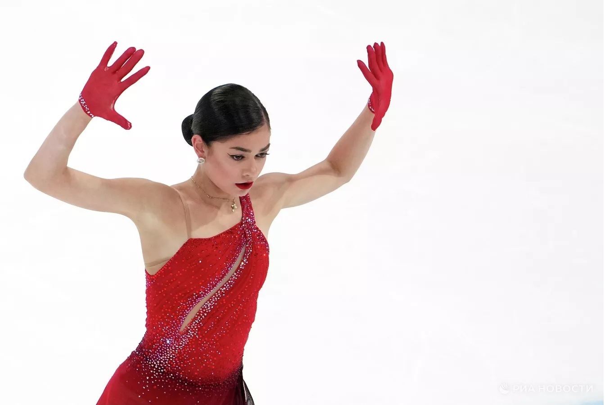

Главная / Фигурное катание
Фигуристка Петросян выступит под вторым номером в короткой программе на Играх
Опубликовано: 17:32 15.02.2026

НОВОСИБИРСК, 15 фев — Новости Спорт. Российская фигуристка Аделия Петросян выступит под вторым номером в короткой программе на Олимпийских играх в Италии.
Жеребьевка стартовых номеров прошла в воскресенье.
Петросян прибыла в Милан 15 февраля. Короткие программы фигуристки представят 17 февраля, а произвольные - двумя днями позднее. Ранее россиянин Петр Гуменник занял шестое место в мужском одиночном катании.
← Вернуться к списку новостей